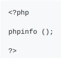
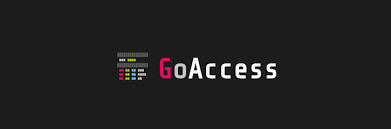
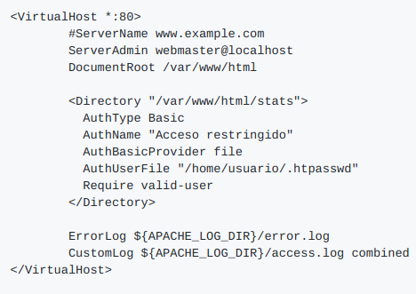
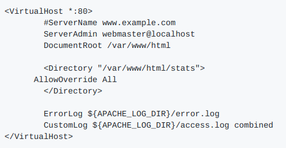

INSTALACIÓN DE LA PILA LAMP
LAMP
Lo primero que harémos será actualizar la lista de paquetes con : apt update
y después actualizamos los páquetes instalados: apt upgrade
APACHE SERVER

Ya actualizado todo procedemos a instalar Apache Server con el comando: apt install apache2
Con Apache ya instalado podemos entrar en sus archivos de configuación:
- mods-available
- mods-enable
- conf-available
- conf-enable
- sites-available
- sites-enable
Y estas se almacenan en el directorio /etc/apache2
Ademas de poder entrar también en los archivos .log:
- /var/log/apache2/access.log : El servidor almacena en el registro de acceso información sobre todas las peticiones que procesa.
- /var/log/apache2/error.log : El registro de errores del servidor.
MySQL SERVER

Instalamos con el comando: apt install mysql-server
Ya instalado podemos acceder a los archivos de configuración y de .log:
- /etc/mysql/mysql.cnf
- /etc/mysql/conf.d/
- /etc/mysql/mysql.conf.d/
- /var/log/mysql/error.log
Para entrar en modo consola con el usuario root pondremos sudo su podremos entrar sin necesidad de poner contraseña, para que root tenga contraseña tenemos dos maneras diferentes de hacerlo:
- Metodo 1
Seleccionamos la base de datos mysql (USE mysql;) en la cual podremos ver todos los usuarios que existen y qué método tienen establecido para autenticar.
(SELECT User, Host, plugin FROM user;)
Para cambiarlo solo necesitariamos hacer uso de:
- ALTER USER 'root'@'localhost' IDENTIFIED WITH caching_sha2_password BY 'nueva_contraseña';
Y para que se apliquen los cambios usamos:
- FLUSH PRIVILEGES;
- Metodo 2
Otra opción para modificar la contraseña del usuario root en MySQL es iniciar el servicio con la opción --skip-grant-tables, que permite que cualquier usuario se pueda conectar sin necesidad de realizar el proceso de autenticación.
El primer paso será detener MySQL y vamos a iniciar el proceso de MySQL de forma manual. Creamos el directorio /var/run/mysqld y le asignamos que el propietario de este directorio es mysql del grupo mysql.
- mkdir -p /var/run/mysqld
- chown mysql:mysql /var/run/mysqld
Volvemos a iniciar el proceso, pasándole como parámetro la opción --skip-grant-tables que permite conectarnos sin contraseña y con todos los privilegios.
- /usr/sbin/mysqld --skip-grant-tables &
(Los & se usan para que el proceso se) ejecute en segundo plano)
Para comprobar que este se está ejecutando hacemos uso del comando:
- ps aux | grep mysqld
Nos conectamos a MySQL como root con todo los privilegios (entramos sin contraseña y usuario)
- mysql
Ahora tendremos que indicarle al servidor que tiene que recargar las tablas encargadas de la autenticación de los usuarios para poder activar la gestión de usuarios. Recuerda que la opción --skip-grant-tables deshabilita esta funcionalidad.
- FLUSH PRIVILEGES;
Cambiamos contraseña:
- ALTER USER 'root'@'localhost' IDENTIFIED BY 'nueva_contraseña';
Y para finalizar salimos del cliente MySQL, detenemos el proceso y reiniciamos
- exit; (Salimos)
- pkill mysqld (Detenemos proceso)
- systemctl restart mysql (Reiniciamos)
PHP

Instalamos los módulos
- apt install php libapache2-mod-php php-mysql
· libapache2-mod-php: Permite servir páginas PHP desde el servidor web apache.
· php-mysql: Permite conectar a una base de datos MySQL desde código PHP.
Creamos un archivo para comprobar si la instalación se ha realizado correctamente.
- nano /var/www/html/info.php
Y añadimos dentro:

------------------------LAMP----------------------------
HERRAMIENTAS PARA LA LAMP
PhpMyAdmin
Lo primero que debemos hacer será instalar los paquetes:
- apt install phpmyadmin php-mbstring php-zip php-gd php-json php-curl
Contenido de los paquetes:
- php-mbstring: Incluye el módulo mbstring (multi-byte string) que permite administrar cadenas no-ASCII y convertir cadenas a diferentes codificaciones.
- php-zip: Permite la carga de archivos .zip a phpMyAdmin.
- php-gd: Incluye la librería GD Graphics que permite crear y modificar imágenes.
- php-json: Añade soporte para trabajar con el formato JSON desde PHP.
- php-curl: Permite interactuar con servidores haciendo uso de diferentes protocolos desde PHP.
Durante el proceso de instalación aparecerá una ventana la cual nos preguntará que tipo de servidor web vamos a usar para ejecutar phpmyadmin
- apache2
Confirmamos que vamos a utilizar el dbconfig-common para configurar la base de datos y finalmente nos solicitará una contraseña para phpmyadmin.
GoAccess

Para instalar GoAccess tendremos que añadir los repositorios oficiales:
- echo "deb http://deb.goaccess.io/ $(lsb_release -cs) main" | sudo tee -a /etc/apt/sources.list.d/goaccess.list
Descargamos los archivos
- wget -O - https://deb.goaccess.io/gnugpg.key | sudo apt-key add -
Y finalmente actualizamos e instalamos
- apt-get update
- apt-get install goaccess
Una vez instalado podremos hacer:
· Parchear el archivo log access.log que nos miestra la información del log a tiempo real
- goaccess /var/log/apache2/access.log -c
Parchear un archivo log que genera un archivo HTML estático
- goaccess /var/log/apache2/access.log -o /var/www/html/report.html --log-format=COMBINED
O parchear un archivo log que genere un archivo HTML en tiempo real
- goaccess /var/log/apache2/access.log -o /var/www/html/report.html --log-format=COMBINED --real-time-html
Y para finalizar con la configuración de GoAccess crearemos un directorio llamado stats en la cual podremos consultar los informes generados. (Este debe estar controlado por lo que solo podremos accedes con usuario y contraseña)
- mkdir /var/www/html/stats
Lanzamos este proceso en segundo plano
- goaccess /var/log/apache2/access.log -o /var/www/html/stats/index.html --log-format=COMBINED --real-time-html &
Pero este & cerraría la sesión SSH en caso de que estuvieramos conectados y ppara evitar esto tenemos estas siguientes utilidades:
-
nohup : Ejecuta el comando que recibe como parámetro y hace que ignore las señales SIGHUP, que son las señales que se envían a un proceso cuando el terminal que los controla se cierra.
- nohup goaccess /var/log/apache2/access.log -o /var/www/html/stats/index.html --log-format=COMBINED --real-time-html &
-
screen : Permite iniciar una sesión y tener varios terminales virtuales en ella. Los procesos que se ejecutan en estos terminales virtuales no finalizarán al cerrar el terminal virtual.
- screen -dmL goaccess /var/log/apache2/access.log -o /var/www/html/stats/index.html --log-format=COMBINED --real-time-html
-
tmux : Es una alternativa más reciente que screen.
Creamos el archivo de contraseñas para el usuario que accederá al directorio stats. El archivo de contraseñas lo guardamos en un directorio seguro que no sea accesible desde el exterior. En nuestro caso el archivo se llamará .htpasswd
- htpasswd -c /home/usuario/.htpasswd usuario
Editamos el archivo de configuración de Apache
- nano /etc/apache2/sites-enabled/000-default.conf
Y en ella añadiremos lo siguiente:

Por último en el directorio stats lanzamos el proceso en segundo plano de gooaccess para restringir el acceso por usuario y contraseña al directorio .htpasswd
- htpasswd -c /home/usuario/.htpasswd usuario
Creamos el archivo .htpasswd
- nano /var/www/html/stats/.htaccess
Y dentro de el añadiremos:
- AuthType Basic AuthName "Acceso restringido" AuthBasicProvider file AuthUserFile "/home/usuario/.htpasswd" Require valid-user
Editamos el archivo de configuración de apache:
- nano /etc/apache2/sites-enabled/000-default.conf
Y añadiremos:

AWStats
Es una herramienta open source de informes de análisis web, apta para analizar datos de servicios de Internet como un servidor web, streaming, mail y FTP. AWstats analiza los archivos de log del servidor, y basándose en ellos produce informes HTML.
Para ello actualizamos e instalamos lo paquetes
- apt-get update
- apt-get install awstats libgeo-ipfree-perl libnet-ip-perl
Y ya instalado ahora podremos configurar
- cp /etc/awstats/awstats.conf /etc/awstats/awstats.example.com.conf
Dentro de este haríamos nuestros cambios:
LogFormat=1
SiteDomain="ejemplo.com"
HostAliases="localhost 127.0.0.1 example.com"
AllowFullYearView=3
AllowAccessFromWebToFollowingIPAddresses="127.0.0.1 192.168.1.0-192.168.1.255"
LoadPlugin="información sobre herramientas"
LoadPlugin="graphgooglechartapi"
LoadPlugin="geoipfree"
Eliminamos datos existentes para que no de error
- sudo mv /etc/cron.d/awstats/root
- sudo rm /var/lib/awstats/*
Y a continuación cambiamos los permisos:
- chgrp www-data /var/log/apache2/var/log/apache2/* log /var/log/apache2/access.log
- chmod 755 /var/log/apache2
- sudo chmod 644 /var/log/apache2/*
Modificamos archivo:
- nano /etc/logrotate.d/apache2
Y cambiamos el crear 640 por crear 640 root www-data
Configuramos los archivos de apache:
- nano /etc/apache2/sites-available/example.com.conf
Y lo arreglaremos así:
Alias /awstatsclasses"/usr/share/awstats/lib/"
Alias /awstats-icon/"/usr/share/awstats/icon/"
Alias / awstatscss"/usr/share/doc/awstats/examples/css"
ScriptAlias /cgi-bin/ /usr/lib/cgi-bin/
ScriptAlias /awstats/ /usr/lib/cgi-bin/
Opciones + ExecCGI -MultiViews + SymLinksIfOwnerMatch
Cerramos el archivo y activamos el modulo CGI:
- a2enmod cgi
Y finalmente reiniciamos apache
- systemctl reiniciar apache2